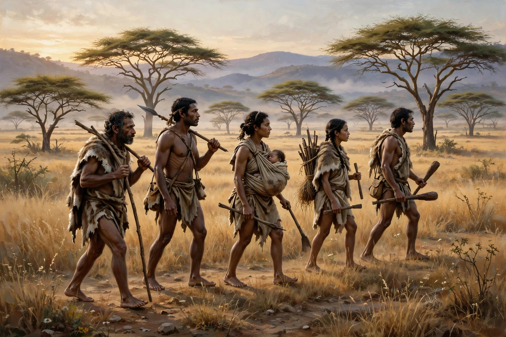

Homo sapiens

Homo sapiens is the scientific name of modern humans — the only living species of the genus Homo and the most widespread primate on Earth, with a population over 8 billion.
Origins
Anatomically modern humans evolved in Africa; the oldest widely accepted fossils, from Jebel Irhoud, Morocco, date to about 300,000 years ago. From ~60–70,000 years ago, populations spread across the world, largely replacing other humans (see Neanderthal), though interbreeding left 1–4% Neanderthal ancestry in most non-African genomes.
Defining traits include a globular braincase, small face tucked under the braincase, bipedalism, large brain (~1,300–1,400 cm³), language and cumulative culture.
Classification
In Taxonomy: order Primates, family Hominidae (great apes — with chimpanzees, gorillas and orangutans), genus Homo. Humans share ~98.8% of DNA with chimpanzees, our closest living relatives.